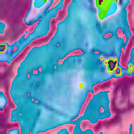

model_checkpoint = "timm/convnext_tiny.in12k_ft_in1k" # pre-trained model from which to fine-tune
batch_size = 32 # batch size for training and evaluation基于hf官方笔记本的图像分类微调流程
This notebook shows how to fine-tune any pretrained Vision model for Image Classification on a custom dataset. The idea is to add a randomly initialized classification head on top of a pre-trained encoder, and fine-tune the model altogether on a labeled dataset.
本笔记本展示了如何在自定义数据集上，对任意预训练的视觉模型（Vision model）进行图像分类（Image Classification）微调。其思路是在预训练的编码器（encoder）顶部添加一个随机初始化的分类头（classification head），然后在带标签的数据集上整体微调整个模型。
ImageFolder (图像文件夹)
This notebook leverages the ImageFolder feature to easily run the notebook on a custom dataset (namely, EuroSAT in this tutorial). You can either load a Dataset from local folders or from local/remote files, like zip or tar.
本笔记本利用 图像文件夹（ImageFolder） 功能，方便地在自定义数据集上运行笔记本（本教程中为 EuroSAT）。你可以从本地文件夹加载一个 Dataset，也可以从本地/远程文件加载，例如 zip 或 tar。
Any model (任意模型)
This notebook is built to run on any image classification dataset with any vision model checkpoint from the Model Hub as long as that model has a version with a Image Classification head, such as: * ViT * Swin Transformer * ConvNeXT
- in short, any model supported by AutoModelForImageClassification.
这个 notebook 旨在运行于任何图像分类（Image Classification）数据集，并且可以搭配 Model Hub 中的任意 vision model checkpoint，只要该模型有带 Image Classification head 的版本，例如： * ViT * Swin Transformer * ConvNeXT
- 简而言之，任何受 AutoModelForImageClassification 支持的模型都可以。
Data augmentation (数据增强)
This notebook leverages Torchvision’s transforms for applying data augmentation - note that we do provide alternative notebooks which leverage other libraries, including:
Depending on the model and the GPU you are using, you might need to adjust the batch size to avoid out-of-memory errors. Set those two parameters, then the rest of the notebook should run smoothly.
In this notebook, we’ll fine-tune from the https://huggingface.co/microsoft/swin-tiny-patch4-window7-224 checkpoint, but note that there are many, many more available on the hub.
本 notebook 使用 Torchvision 的 transforms 来进行数据增强（data augmentation）——注意，我们也提供了使用其他库的替代 notebook，包括：
根据你使用的模型和 GPU，可能需要调整批量大小（batch size），以避免内存不足（out-of-memory）错误。设置好这两个参数后，notebook 的其余部分应该就能顺利运行。
在这个 notebook 中，我们将从 https://huggingface.co/microsoft/swin-tiny-patch4-window7-224 这个 checkpoint 进行微调（fine-tune），但请注意，在 hub 上还有很多很多其他可用的模型。
改为使用timm/convnext_tiny.in12k_ft_in1k
Before we start, let’s install the datasets, transformers and accelerate libraries.
在开始之前，让我们安装 datasets、transformers 和 accelerate 库。
# !pip install -q datasets transformers accelerate evaluateIf you’re opening this notebook locally, make sure your environment has an install from the last version of those libraries.
To be able to share your model with the community and generate results like the one shown in the picture below via the inference API, there are a few more steps to follow.
First you have to store your authentication token from the Hugging Face website (sign up here if you haven’t already!) then execute the following cell and input your token:
如果你要在本地打开这个 notebook，请确保你的环境中安装的是这些库的最新版本。
为了能够通过推理 API（inference API）与社区共享你的模型，并生成如下图所示的结果，还需要再执行几个步骤。
首先，你需要从 Hugging Face 网站保存你的认证 token（如果你还没有注册，可以先在这里注册！），然后运行下面这个单元格，并输入你的 token：
from huggingface_hub import notebook_login
notebook_login()Then you need to install Git-LFS to upload your model checkpoints:
然后你需要安装 Git-LFS 才能上传模型检查点：
# %%capture
# !sudo apt -qq install git-lfs
# !git config --global credential.helper storeFine-tuning a model on an image classification task (在图像分类任务上微调模型)
In this notebook, we will see how to fine-tune one of the 🤗 Transformers vision models on an Image Classification dataset.
Given an image, the goal is to predict an appropriate class for it, like “tiger”. The screenshot below is taken from a ViT fine-tuned on ImageNet-1k - try out the inference widget!
在这个 notebook 中，我们将了解如何在图像分类（Image Classification）数据集上微调（fine-tune）一个 🤗 Transformers 视觉模型（vision model）。
给定一张图像，目标是预测它所属的合适类别，比如“tiger”。下面的截图来自一个 在 ImageNet-1k 上微调的 ViT——不妨试试这个推理组件（inference widget）！

Loading the dataset (加载数据集)
We will use the 🤗 Datasets library’s ImageFolder feature to download our custom dataset into a DatasetDict.
In this case, the EuroSAT dataset is hosted remotely, so we provide the data_files argument. Alternatively, if you have local folders with images, you can load them using the data_dir argument.
我们将使用 🤗 Datasets 库的 ImageFolder 功能，把自定义数据集下载到一个 DatasetDict 中。
在这种情况下，EuroSAT 数据集托管在远程，因此我们需要提供 data_files 参数。或者，如果你本地有包含图像的文件夹，也可以使用 data_dir 参数来加载它们。
from datasets import load_dataset
# load a custom dataset from local/remote files or folders using the ImageFolder feature
# option 1: local/remote files
dataset = load_dataset("jonathan-roberts1/EuroSAT")
# note that you can also provide several splits:
# dataset = load_dataset("imagefolder", data_files={"train": ["path/to/file1", "path/to/file2"], "test": ["path/to/file3", "path/to/file4"]})
# note that you can push your dataset to the hub very easily (and reload afterwards using load_dataset)!
# dataset.push_to_hub("nielsr/eurosat")
# dataset.push_to_hub("nielsr/eurosat", private=True)
# option 2: local folder
# dataset = load_dataset("imagefolder", data_dir="path_to_folder")
# option 3: just load any existing dataset from the hub, like CIFAR-10, FashionMNIST ...
# dataset = load_dataset("cifar10")Let us also load the Accuracy metric, which we’ll use to evaluate our model both during and after training.
我们也来加载准确率（Accuracy）指标，它将用于在训练过程中以及训练结束后评估我们的模型。
import evaluate
metric = evaluate.load("accuracy")The dataset object itself is a DatasetDict, which contains one key per split (in this case, only “train” for a training split).
dataset 对象本身是一个 DatasetDict，它为每个划分各包含一个键（在这里，训练划分只有 "train"）。
datasetDatasetDict({
train: Dataset({
features: ['image', 'label'],
num_rows: 27000
})
})To access an actual element, you need to select a split first, then give an index:
要访问某个实际元素，你需要先选择一个拆分（split），然后给出一个索引：
example = dataset["train"][10]
example{'image': <PIL.JpegImagePlugin.JpegImageFile image mode=RGB size=64x64>,
'label': 0}Each example consists of an image and a corresponding label. We can also verify this by checking the features of the dataset:
每个样本都由一张图像和相应的标签组成。我们也可以通过检查该数据集（dataset）的特征（features）来验证这一点：
dataset["train"].features{'image': Image(mode=None, decode=True),
'label': ClassLabel(names=['annual crop', 'forest', 'herbaceous vegetation', 'highway', 'industrial', 'pasture', 'permanent crop', 'residential', 'river', 'sea or lake'])}The cool thing is that we can directly view the image (as the ‘image’ field is an Image feature), as follows:
有趣的是，我们可以直接查看图像（因为 image 字段是一个图像特征（Image feature）），如下所示：
example['image']Let’s make it a little bigger as the images in the EuroSAT dataset are of low resolution (64x64 pixels):
让我们把它稍微放大一点，因为 EuroSAT 数据集中的图像分辨率较低（64×64 像素）：
example['image'].resize((200, 200))Let’s print the corresponding label:
让我们打印对应的标签：
example['label']0As you can see, the label field is not an actual string label. By default the ClassLabel fields are encoded into integers for convenience:
正如你所见，label 字段并不是实际的字符串标签。默认情况下，ClassLabel 字段会被编码为整数，方便使用：
dataset["train"].features["label"]ClassLabel(names=['annual crop', 'forest', 'herbaceous vegetation', 'highway', 'industrial', 'pasture', 'permanent crop', 'residential', 'river', 'sea or lake'])annual crop→ 一年生作物forest→ 森林herbaceous vegetation→ 草本植被highway→ 公路industrial→ 工业区pasture→ 牧场permanent crop→ 多年生作物residential→ 住宅区river→ 河流sea or lake→ 海洋或湖泊
Let’s create an id2label dictionary to decode them back to strings and see what they are. The inverse label2id will be useful too, when we load the model later.
让我们创建一个 id2label 字典，把它们解码回字符串，看看它们分别是什么。反向的 label2id 之后在加载模型时也会很有用。
labels = dataset["train"].features["label"].names
label2id, id2label = dict(), dict()
for i, label in enumerate(labels):
label2id[label] = i
id2label[i] = label
id2label[2]'herbaceous vegetation'Preprocessing the data (数据预处理)
Before we can feed these images to our model, we need to preprocess them.
Preprocessing images typically comes down to (1) resizing them to a particular size (2) normalizing the color channels (R,G,B) using a mean and standard deviation. These are referred to as image transformations.
In addition, one typically performs what is called data augmentation during training (like random cropping and flipping) to make the model more robust and achieve higher accuracy. Data augmentation is also a great technique to increase the size of the training data.
We will use torchvision.transforms for the image transformations/data augmentation in this tutorial, but note that one can use any other package (like albumentations, imgaug, Kornia etc.).
To make sure we (1) resize to the appropriate size (2) use the appropriate image mean and standard deviation for the model architecture we are going to use, we instantiate what is called an image processor with the AutoImageProcessor.from_pretrained method.
This image processor is a minimal preprocessor that can be used to prepare images for inference.
在将这些图像输入模型之前，我们需要先对它们进行预处理。
图像预处理通常包括：（1）将图像调整到特定尺寸；（2）使用均值和标准差对颜色通道（R、G、B）进行归一化。这些操作统称为图像变换（image transformations）。
此外，在训练过程中，通常还会进行数据增强（data augmentation）（例如随机裁剪和翻转），以提高模型的鲁棒性并获得更高的准确率。数据增强也是扩大训练数据规模的一种很好的技术。
在本教程中，我们将使用 torchvision.transforms 来完成图像变换/数据增强，但请注意，也可以使用其他任何包（例如 albumentations、imgaug、Kornia 等）。
为了确保我们（1）将图像调整到合适的尺寸，（2）针对将要使用的模型架构采用合适的图像均值和标准差，我们会使用 AutoImageProcessor.from_pretrained 方法实例化一个称为图像处理器（image processor）的对象。
这个图像处理器是一个轻量级的预处理器，可用于为推理准备图像。
from transformers import AutoImageProcessor
image_processor = AutoImageProcessor.from_pretrained(model_checkpoint)
image_processor Requested torchvision backend is not available. Falling back to pil backend.TimmWrapperImageProcessor {
"architecture": "convnext_tiny",
"data_config": {
"crop_mode": "center",
"crop_pct": 0.95,
"input_size": [
3,
224,
224
],
"interpolation": "bicubic",
"mean": [
0.485,
0.456,
0.406
],
"std": [
0.229,
0.224,
0.225
]
},
"image_processor_type": "TimmWrapperImageProcessor"
}The Datasets library is made for processing data very easily. We can write custom functions, which can then be applied on an entire dataset (either using .map() or .set_transform()).
Here we define 2 separate functions, one for training (which includes data augmentation) and one for validation (which only includes resizing, center cropping and normalizing).
Datasets 库非常适合轻松处理数据。我们可以编写自定义函数，然后将它们应用到整个数据集上（可以使用 .map() 或 .set_transform()）。
这里我们定义了两个独立的函数：一个用于训练（包括数据增强），另一个用于验证（只包括调整大小、中心裁剪和归一化）。
from torchvision.transforms import (
CenterCrop,
Compose,
Normalize,
RandomHorizontalFlip,
RandomResizedCrop,
Resize,
ToTensor,
)normalize = Normalize(mean=image_processor.data_config['mean'], std=image_processor.data_config['std'])
size = int(image_processor.data_config['input_size'][1] / image_processor.data_config['crop_pct'])
crop_size = image_processor.data_config["input_size"][1]
max_size = Nonetrain_transforms = Compose(
[
RandomResizedCrop(crop_size),
RandomHorizontalFlip(),
ToTensor(),
normalize,
]
)val_transforms = Compose(
[
Resize(size),
CenterCrop(crop_size),
ToTensor(),
normalize,
]
)def preprocess_train(example_batch):
"""Apply train_transforms across a batch."""
example_batch["pixel_values"] = [
train_transforms(image.convert("RGB")) for image in example_batch["image"]
]
return example_batchdef preprocess_val(example_batch):
"""Apply val_transforms across a batch."""
example_batch["pixel_values"] = [val_transforms(image.convert("RGB")) for image in example_batch["image"]]
return example_batchNext, we can preprocess our dataset by applying these functions. We will use the set_transform functionality, which allows to apply the functions above on-the-fly (meaning that they will only be applied when the images are loaded in RAM).
接下来，我们可以通过应用这些函数来预处理我们的数据集。我们将使用 set_transform 功能，它允许我们按需应用上面的函数（也就是说，这些函数只会在图像加载到 RAM 中时才被执行）。
# split up training into training + validation
splits = dataset["train"].train_test_split(test_size=0.1)
train_ds = splits['train']
val_ds = splits['test']train_ds.set_transform(preprocess_train)
val_ds.set_transform(preprocess_val)Let’s access an element to see that we’ve added a “pixel_values” feature:
让我们访问一个元素，看看我们是否已经添加了一个“pixel_values”特征：
from torchvision.transforms.functional import to_pil_image
img = to_pil_image(train_ds[0]['pixel_values'])
img
Training the model (训练模型)
Now that our data is ready, we can download the pretrained model and fine-tune it. For classification we use the AutoModelForImageClassification class. Calling the from_pretrained method on it will download and cache the weights for us. As the label ids and the number of labels are dataset dependent, we pass label2id, and id2label alongside the model_checkpoint here. This will make sure a custom classification head will be created (with a custom number of output neurons).
NOTE: in case you’re planning to fine-tune an already fine-tuned checkpoint, like facebook/convnext-tiny-224 (which has already been fine-tuned on ImageNet-1k), then you need to provide the additional argument ignore_mismatched_sizes=True to the from_pretrained method. This will make sure the output head (with 1000 output neurons) is thrown away and replaced by a new, randomly initialized classification head that includes a custom number of output neurons. You don’t need to specify this argument in case the pre-trained model doesn’t include a head.
现在数据已经准备好了，我们可以下载预训练模型（pretrained model）并对其进行微调（fine-tune）。对于分类，我们使用 AutoModelForImageClassification 类。对它调用 from_pretrained 方法会自动为我们下载并缓存权重。由于标签 id 和标签数量取决于数据集，这里我们会在 model_checkpoint 一起传入 label2id 和 id2label。这样可以确保系统创建一个自定义分类头（custom classification head）（带有自定义数量的输出神经元）。
注意：如果你打算对一个已经微调过的 checkpoint 再次微调，比如 facebook/convnext-tiny-224（它已经在 ImageNet-1k 上完成过微调），那么你需要在 from_pretrained 方法中额外提供参数 ignore_mismatched_sizes=True。这会确保原来的输出头（有 1000 个输出神经元）被丢弃，并替换为一个新的、随机初始化的分类头，其中包含自定义数量的输出神经元。如果预训练模型本身不包含头部，那么你就不需要指定这个参数。
from transformers import AutoModelForImageClassification, TrainingArguments, Trainer
model = AutoModelForImageClassification.from_pretrained(
model_checkpoint,
label2id=label2id,
id2label=id2label,
ignore_mismatched_sizes = True, # provide this in case you're planning to fine-tune an already fine-tuned checkpoint
num_labels=10
)TimmWrapperForImageClassification LOAD REPORT from: timm/convnext_tiny.in12k_ft_in1k
Key | Status |
--------------------------+----------+-------------------------------------------------------------------------------------------
timm_model.head.fc.weight | MISMATCH | Reinit due to size mismatch - ckpt: torch.Size([1000, 768]) vs model:torch.Size([10, 768])
timm_model.head.fc.bias | MISMATCH | Reinit due to size mismatch - ckpt: torch.Size([1000]) vs model:torch.Size([10])
Notes:
- MISMATCH: ckpt weights were loaded, but they did not match the original empty weight shapes.
Loading weights: 0%| | 0/182 [00:00<?, ?it/s]model.config.label2id{'annual crop': 0,
'forest': 1,
'herbaceous vegetation': 2,
'highway': 3,
'industrial': 4,
'pasture': 5,
'permanent crop': 6,
'residential': 7,
'river': 8,
'sea or lake': 9}The warning is telling us we are throwing away some weights (the weights and bias of the classifier layer) and randomly initializing some other (the weights and bias of a new classifier layer). This is expected in this case, because we are adding a new head for which we don’t have pretrained weights, so the library warns us we should fine-tune this model before using it for inference, which is exactly what we are going to do.
这个警告告诉我们，我们丢弃了一些权重（classifier 层的权重和偏置），并随机初始化了另外一些权重（一个新的 classifier 层的权重和偏置）。在这种情况下，这正是预期行为，因为我们正在添加一个新的头部，而它没有预训练权重，所以库会提醒我们，在将这个模型用于推理之前，应该先对它进行微调，而这正是我们接下来要做的。
To instantiate a Trainer, we will need to define the training configuration and the evaluation metric. The most important is the TrainingArguments, which is a class that contains all the attributes to customize the training. It requires one folder name, which will be used to save the checkpoints of the model.
Most of the training arguments are pretty self-explanatory, but one that is quite important here is remove_unused_columns=False. This one will drop any features not used by the model’s call function. By default it’s True because usually it’s ideal to drop unused feature columns, making it easier to unpack inputs into the model’s call function. But, in our case, we need the unused features (‘image’ in particular) in order to create ‘pixel_values’.
要实例化一个 Trainer，我们需要定义训练配置和评估指标。最重要的是 TrainingArguments，它是一个包含所有用于自定义训练属性的类。它需要一个文件夹名称，用于保存模型的检查点（checkpoint）。
大多数训练参数都很直观，但这里有一个非常重要的是 remove_unused_columns=False。这个参数会删除模型的 call 函数未使用的任何特征。默认情况下它为 True，因为通常删除未使用的特征列是理想的，这样更容易将输入解包到模型的 call 函数中。但在我们的场景里，我们需要这些未使用的特征（尤其是 image），以便创建 pixel_values。
model_name = model_checkpoint.split("/")[-1]args = TrainingArguments(
f"{model_name}-finetuned-eurosat",
remove_unused_columns=False,
eval_strategy = "epoch",
save_strategy = "epoch",
learning_rate=5e-5,
per_device_train_batch_size=batch_size,
gradient_accumulation_steps=4,
per_device_eval_batch_size=batch_size,
num_train_epochs=3,
warmup_steps=57,
logging_steps=10,
load_best_model_at_end=True,
metric_for_best_model="accuracy",
push_to_hub=True,
)Here we set the evaluation to be done at the end of each epoch, tweak the learning rate, use the batch_size defined at the top of the notebook and customize the number of epochs for training, as well as the weight decay. Since the best model might not be the one at the end of training, we ask the Trainer to load the best model it saved (according to metric_name) at the end of training.
The last argument push_to_hub allows the Trainer to push the model to the Hub regularly during training. Remove it if you didn’t follow the installation steps at the top of the notebook. If you want to save your model locally with a name that is different from the name of the repository, or if you want to push your model under an organization and not your name space, use the hub_model_id argument to set the repo name (it needs to be the full name, including your namespace: for instance "nielsr/vit-finetuned-cifar10" or "huggingface/nielsr/vit-finetuned-cifar10").
这里我们将评估设置为在每个 epoch 结束时进行，调整学习率，使用笔记本顶部定义的 batch_size，并自定义训练的 epoch 数以及权重衰减（weight decay）。由于最佳模型未必是训练结束时的那个，我们让 Trainer 在训练结束时加载它保存的最佳模型（根据 metric_name 判定）。
最后一个参数 push_to_hub 允许 Trainer 在训练过程中定期将模型推送到 Hub。如果你没有按照笔记本开头的安装步骤操作，就把它删除。如果你想用一个不同于仓库名的名称把模型保存在本地，或者想把模型推送到某个组织（organization）下而不是你自己的命名空间（namespace）下，可以使用 hub_model_id 参数来设置仓库名（它需要是完整名称，包括你的命名空间；例如 "nielsr/vit-finetuned-cifar10" 或 "huggingface/nielsr/vit-finetuned-cifar10"）。
Next, we need to define a function for how to compute the metrics from the predictions, which will just use the metric we loaded earlier. The only preprocessing we have to do is to take the argmax of our predicted logits:
接下来，我们需要定义一个函数，用于根据预测结果计算指标，这里只会使用我们之前加载的 metric。我们唯一需要做的预处理，就是对预测的 logits 取 argmax：
import numpy as np
# the compute_metrics function takes a Named Tuple as input:
# predictions, which are the logits of the model as Numpy arrays,
# and label_ids, which are the ground-truth labels as Numpy arrays.
def compute_metrics(eval_pred):
"""Computes accuracy on a batch of predictions"""
predictions = np.argmax(eval_pred.predictions, axis=1)
return metric.compute(predictions=predictions, references=eval_pred.label_ids)We also define a collate_fn, which will be used to batch examples together. Each batch consists of 2 keys, namely pixel_values and labels.
我们还定义了一个 collate_fn，它将用于把样本组装成一个批次。
每个批次包含 2 个键，分别是 pixel_values 和 labels。
import torch
def collate_fn(examples):
pixel_values = torch.stack([example["pixel_values"] for example in examples])
labels = torch.tensor([example["label"] for example in examples])
return {"pixel_values": pixel_values, "labels": labels}Then we just need to pass all of this along with our datasets to the Trainer:
然后，我们只需将所有这些以及我们的数据集一起传递给 Trainer：
trainer = Trainer(
model,
args,
train_dataset=train_ds,
eval_dataset=val_ds,
processing_class=image_processor,
compute_metrics=compute_metrics,
data_collator=collate_fn,
)You might wonder why we pass along the image_processor as a tokenizer when we already preprocessed our data. This is only to make sure the image processor configuration file (stored as JSON) will also be uploaded to the repo on the hub.
你可能会想，既然我们已经预处理了数据，为什么还要把 image_processor 当作分词器（tokenizer）传下去。这么做只是为了确保图像处理器（image processor）的配置文件（以 JSON 存储）也会一并上传到 hub 上的 repo。
Now we can finetune our model by calling the train method:
现在我们可以通过调用 train 方法来微调我们的模型：
train_results = trainer.train()
# rest is optional but nice to have
trainer.save_model()
trainer.log_metrics("train", train_results.metrics)
trainer.save_metrics("train", train_results.metrics)
trainer.save_state()
[570/570 13:04, Epoch 3/3]
| Epoch | Training Loss | Validation Loss | Accuracy |
|---|---|---|---|
| 1 | 0.192660 | 0.095770 | 0.964444 |
| 2 | 0.142947 | 0.050706 | 0.984444 |
| 3 | 0.087878 | 0.042748 | 0.987407 |
The `save_pretrained` method is disabled for TimmWrapperImageProcessor. The image processor configuration is saved directly in `config.json` when `save_pretrained` is called for saving the model.Writing model shards: 0%| | 0/1 [00:00<?, ?it/s]
Writing model shards: 0%| | 0/1 [00:00<?, ?it/s]
Writing model shards: 0%| | 0/1 [00:00<?, ?it/s]
Writing model shards: 0%| | 0/1 [00:00<?, ?it/s]
Writing model shards: 0%| | 0/1 [00:00<?, ?it/s]
Processing Files (0 / 0): | | 0.00B / 0.00B
New Data Upload: | | 0.00B / 0.00B
***** train metrics *****
epoch = 3.0
total_flos = 1706378437GF
train_loss = 0.2645
train_runtime = 0:13:08.64
train_samples_per_second = 92.437
train_steps_per_second = 0.723We can check with the evaluate method that our Trainer did reload the best model properly (if it was not the last one):
我们可以通过 evaluate 方法来检查我们的 Trainer 是否已正确重新加载最佳模型（如果它不是最后一个模型的话）：
from transformers.utils.notebook import NotebookProgressCallback
trainer.remove_callback(NotebookProgressCallback)
metrics = trainer.evaluate()
# some nice to haves:
trainer.log_metrics("eval", metrics)
trainer.save_metrics("eval", metrics)***** eval metrics *****
epoch = 3.0
eval_accuracy = 0.9874
eval_loss = 0.0427
eval_runtime = 0:00:07.32
eval_samples_per_second = 368.424
eval_steps_per_second = 11.599You can now upload the result of the training to the Hub, just execute this instruction (note that the Trainer will automatically create a model card as well as Tensorboard logs - see the “Training metrics” tab - amazing isn’t it?):
你现在可以将训练结果上传到 Hub，只需执行这条指令即可（注意，Trainer 还会自动创建模型卡（model card）以及 TensorBoard 日志——查看“训练指标（Training metrics）”标签页——是不是很棒？）：
trainer.push_to_hub()Writing model shards: 0%| | 0/1 [00:00<?, ?it/s]
Processing Files (0 / 0): | | 0.00B / 0.00B
New Data Upload: | | 0.00B / 0.00B
CommitInfo(commit_url='https://huggingface.co/Taozhiyaoyao1/convnext_tiny.in12k_ft_in1k-finetuned-eurosat/commit/fd1dca7c8667528afbf4c52ead943fa7b0c3d11e', commit_message='End of training', commit_description='', oid='fd1dca7c8667528afbf4c52ead943fa7b0c3d11e', pr_url=None, repo_url=RepoUrl('https://huggingface.co/Taozhiyaoyao1/convnext_tiny.in12k_ft_in1k-finetuned-eurosat', endpoint='https://huggingface.co', repo_type='model', repo_id='Taozhiyaoyao1/convnext_tiny.in12k_ft_in1k-finetuned-eurosat'), pr_revision=None, pr_num=None)len(model.config.id2label), model.config.id2label(10,
{0: 'annual crop',
1: 'forest',
2: 'herbaceous vegetation',
3: 'highway',
4: 'industrial',
5: 'pasture',
6: 'permanent crop',
7: 'residential',
8: 'river',
9: 'sea or lake'})You can now share this model with all your friends, family, favorite pets: they can all load it with the identifier "your-username/the-name-you-picked" so for instance:
from transformers import AutoModelForImageClassification, AutoImageProcessor
image_processor = AutoImageProcessor.from_pretrained("nielsr/my-awesome-model")
model = AutoModelForImageClassification.from_pretrained("nielsr/my-awesome-model")你现在可以把这个模型分享给你所有的朋友、家人、最喜欢的宠物：他们都可以使用标识符 "your-username/the-name-you-picked" 来加载它，例如：
from transformers import AutoModelForImageClassification, AutoImageProcessor
image_processor = AutoImageProcessor.from_pretrained("nielsr/my-awesome-model")
model = AutoModelForImageClassification.from_pretrained("nielsr/my-awesome-model")Inference (推理)
Let’s say you have a new image, on which you’d like to make a prediction. Let’s load a satellite image of a forest (that’s not part of the EuroSAT dataset), and see how the model does.
假设你有一张新的图像，想要对它进行预测。我们来加载一张森林的卫星图像（它不属于 EuroSAT 数据集），看看模型表现如何。
from PIL import Image
import requests
url = 'https://huggingface.co/nielsr/convnext-tiny-finetuned-eurostat/resolve/main/forest.png'
image = Image.open(requests.get(url, stream=True).raw)
imageWe’ll load the image processor and model from the hub (here, we use the Auto Classes, which will make sure the appropriate classes will be loaded automatically based on the config.json and preprocessor_config.json files of the repo on the hub):
我们将从 hub 中加载图像处理器和模型（这里我们使用 自动类（Auto Classes），它会根据 hub 上该仓库的 config.json 和 preprocessor_config.json 文件自动加载相应的类）：
from transformers import AutoModelForImageClassification, AutoImageProcessor
repo_name = "Taozhiyaoyao1/convnext_tiny.in12k_ft_in1k-finetuned-eurosat"
image_processor = AutoImageProcessor.from_pretrained(repo_name)
model = AutoModelForImageClassification.from_pretrained(repo_name)config.json: 0.00B [00:00, ?B/s]
model.safetensors: 0%| | 0.00/111M [00:00<?, ?B/s]
Loading weights: 0%| | 0/182 [00:00<?, ?it/s]# prepare image for the model
encoding = image_processor(image.convert("RGB"), return_tensors="pt")
print(encoding.pixel_values.shape)torch.Size([1, 3, 224, 224])import torch
# forward pass
with torch.no_grad():
outputs = model(**encoding)
logits = outputs.logitslogitstensor([[-1.7123, 2.1941, 4.7470, -1.0385, -3.7916, 3.1416, -0.4796, -3.2031,
-0.6646, 0.5881]])predicted_class_idx = logits.argmax(-1).item()
print("Predicted class:", model.config.id2label[predicted_class_idx])Predicted class: herbaceous vegetationLooks like our model got it correct!
看起来我们的模型答对了！
Pipeline API (流水线 API)
An alternative way to quickly perform inference with any model on the hub is by leveraging the Pipeline API, which abstracts away all the steps we did manually above for us. It will perform the preprocessing, forward pass and postprocessing all in a single object.
Let’s showcase this for our trained model:
在 Hub 上对任何模型快速进行推理的另一种方法，是利用 Pipeline API，它会把我们上面手动完成的所有步骤都抽象掉。它会在一个对象中完成预处理、前向传播（forward pass）和后处理（postprocessing）。
下面我们用训练好的模型来演示这一点：
from transformers import pipeline
pipe = pipeline("image-classification", "Taozhiyaoyao1/convnext_tiny.in12k_ft_in1k-finetuned-eurosat")Loading weights: 0%| | 0/182 [00:00<?, ?it/s]pipe(image)[{'label': 'herbaceous vegetation', 'score': 0.7638792991638184},
{'label': 'pasture', 'score': 0.15330344438552856},
{'label': 'forest', 'score': 0.059419143944978714},
{'label': 'sea or lake', 'score': 0.011927205137908459},
{'label': 'permanent crop', 'score': 0.004102200269699097}]As we can see, it does not only show the class label with the highest probability, but does return the top 5 labels, with their corresponding scores. Note that the pipelines also work with local models and mage processors:
正如我们所见，它不仅会显示概率最高的类别标签，还会返回前 5 个标签及其对应的分数。请注意，这些 pipeline 也适用于本地模型和图像处理器（image processors）：
pipe = pipeline("image-classification",
model=model,
feature_extractor=image_processor)pipe(image)[{'label': 'herbaceous vegetation', 'score': 0.7638792991638184},
{'label': 'pasture', 'score': 0.15330344438552856},
{'label': 'forest', 'score': 0.059419143944978714},
{'label': 'sea or lake', 'score': 0.011927205137908459},
{'label': 'permanent crop', 'score': 0.004102200269699097}]